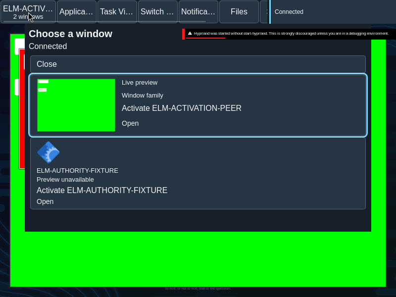
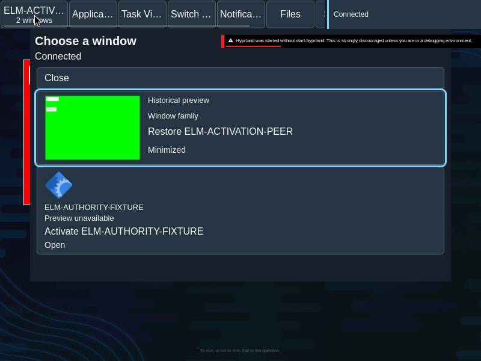
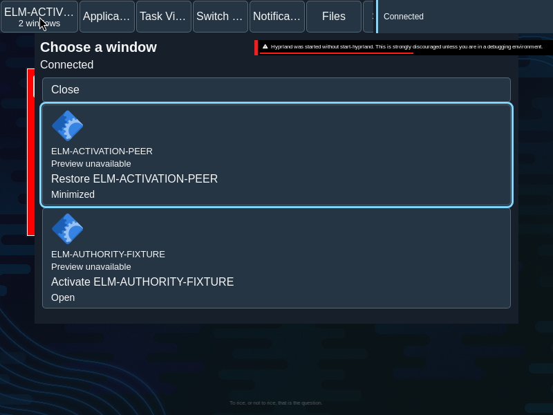
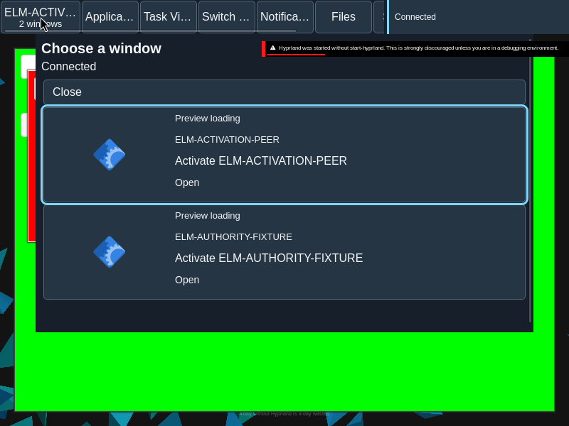

Previews
Previews offer a visual reference to a window family while preserving the identity and geometry of its control.
Overview
Previews offer a visual reference to a window family while preserving the identity and geometry of its control.
Anatomy
A preview well, caption and fallback sit within the family control. The image is supplementary to its text.
The well reserves space for an image or fallback; the caption identifies the family. A passive description communicates preview state without making the image a second interactive target.
States
Live, historical, loading and unavailable presentations communicate different levels of freshness and availability.
Local preview feedback
A preview can show local feedback while the family control retains its name and position. The status is a passive description of that control, not a replacement for its accessible name.
- Capacity: “Waiting for preview capacity”
- Waiting: “Waiting for preview”
- Expired: “Preview request expired”
- Conflict: “Preview request changed”
- Exhausted: “Preview unavailable”
These messages occupy the preview well without changing the family target’s geometry. The preview content is decorative inside the control; its state is exposed as a description so keyboard and assistive technology users retain a stable target.
- Live: current preview content is available.
- Historical: retained content is identified as historical.
- Loading: a request is in progress, not a guarantee of a frame.
- Unavailable: text or application fallback remains in the same well.
Specimen
Real Elm interface. Simulated desktop. Client window interiors are fixtures. Load the desktop only when you want to explore this component.
Open the full desktop scenario
Related archived specimens: Frozen v6 preview, Frozen v6 image, Frozen v6 caption. Frozen v6 is an archival reference.
Behavior
Preview updates do not resize or move a held target. Local feedback and fallback remain within the same well; activating the family remains a separate action.
Preview lifecycle updates replace content within reserved geometry. They do not activate the family, change the caption into a button, or move a target under the pointer.
Accessibility
A caption and accessible name convey identity and state without requiring the image. Focus remains on the control as its preview changes.
Content
Describe historical content as historical and unavailable content as unavailable; a loading attempt does not prove a successful image.
Describe freshness honestly. Give the family a useful name even if no image arrives; do not use the preview image as the only means of identifying a window.
Evidence
Unmodified captures of the running interface record the states below.




Try it
Explore previews in context on the simulated desktop.